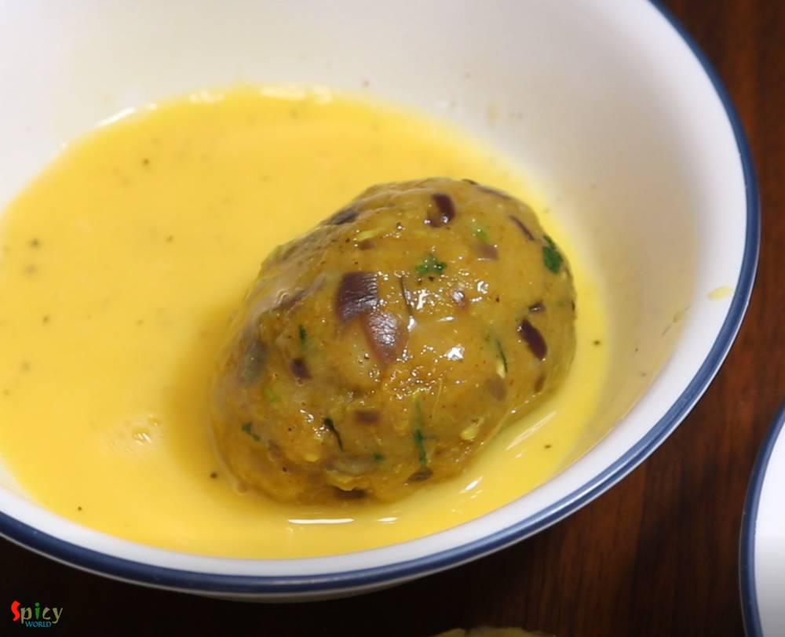

Simple and Easy Recipes
Dimer Chop / Egg Devil / Dimer Devil
© 2016 Spicy World, Published on: Jan 1, 2019
In Bengal, one of the famous street food is 'dimer devil'. Dim means Egg in Bengal. Nowadays, 'egg chop' is also served in many party, get to gather and occasions. To make this you have to wrap a boiled egg with spicy potato filling, roll them in bread crumbs and then deep fry them. In college canteen or any ceremony, sometimes the cook mix some minced mutton (keema) with the spicy potato, the taste becomes divine. But today I am sharing this recipe without keema. This yummy starter can be enjoyed with a cup of tea or a glass of beer. Try this in your kitchen and spend some quality time with Egg Devil & your loved ones.

Ingredients
- 3 eggs.
- 1 big, (boiled, peeled, mashed) potato.
- 1 Tablespoon of ginger garlic paste.
- 1 small onion, finely chopped.
- Spice powder (1 Teaspoon of red chili powder, 1 Teaspoon of roasted coriander powder, Half Teaspoon of turmeric powder, 1 Teaspoon of roasted cumin powder).
- Salt and sugar.
- Little black pepper powder.
- Some chopped green chilies.
- Some chopped coriander leaves.
- 1 raw egg.
- 1-2 cups of bread crumbs.
- Oil for deep frying.
- 1 Teaspoon of chat masala powder.


Steps
Add the eggs in boiling water and boil for exactly 7 minutes.

Then immediately remove them from boiling water and keep them in cold water.
Discard the outer part of the eggs and keep aside.
Now with the help of a thread, cut the eggs into halves.

You can also cut them with knife. But cutting with thread will give the eggs a smooth texture. You can see the difference in pictures.

Heat 2 Tablespoons of oil in another pan.
Add ginger garlic paste. Cook for a minute on low flame.

Then add chopped onion along with a pinch of salt. Cook for 3-4 minutes on medium flame.

After that, add all of the spice powder. Mix well for 1-2 minutes.
Then add the mashed potato, mix well for 2-3 minutes on medium flame.

For the seasoning, add some salt and a pinch of sugar. Mix well.
Lastly add chopped green chilies, coriander leaves and chat masala. Mix well and turn off the heat.

Now sprinkle some salt and black pepper powder all over the eggs.
Take some potato mixture within your palm, flatten it. Place one egg in the center and carefully wrap it with the potato mixture.
Shape it by gently pressing within your palm. Try to give it oblong or oval shape.

Beat one raw egg with some salt and pepper.
Dip one wrapped egg into this beaten egg.
Now roll it in breadcrumbs. You can also double coat (repeat the same process) them if you want.

Keep the coated eggs in refrigerator for 15-20 minutes. Then drop them gently in hot oil.
Fry them for 3-4 minutes on medium flame by rotating the sides.
When they become nice golden in color, remove them from oil.

Your egg devils are ready to serve.
Serve this hot with kasundi and tea.
")